library(tidyverse) # for plotting
# install.packages("devtools")
# devtools::install_github("QFCatMSU/gg-qfc")
library(ggqfc) # formatting, run previous 2 lines for first gg-qfc install
y <- 2 # successes
n <- 30 # trials
eps <- 1e-6 # buffer because theta must lie within [0,1]
theta <- seq(eps, 1 - eps, length.out = 1e4) # sequence to thetas to try
logLike <- y * log(theta) + (n - y) * log(1 - theta) # plug thetas into pmf
MLE <- theta[which.max(logLike)] # maximum likelihood estimate
my_data <- data.frame(logLike, theta) # for plottingApplied Bayesian Modeling for Natural Resource Management
FW 891
Click here to view presentation online
Christopher Cahill
28 August 2023
Outline: Part I
- Introductions
- Syllabus and recommended background
- Course organization
- Some Bayesian examples from my own work
- Philosophy and course themes
- Software and website
- Expectations and disclaimers
- Break
Introduction to FW 891
- Welcome
- Housekeeping
- Washrooms, Zoom, UPLA, office hours, etc.
- Round-table introductions
- Background, area of study, why are you here, ice breaker
Syllabus
- Everything through Github
- Syllabus, links to readings, etc.
- All presentations and code
- Office hours by appointment
Course organization
- Monday lectures where we generally cover theory/concepts
- Wednesday labs where we work on implementation and in-class exercises
- 4 homework assignments
- 1 class project
- Preliminary draft due 22 Sept
- Final presentation/write-up 4 and 6 Dec
Recommended background
- Previous experience with statistics
- Previous experience programming
- for-loops, functions, data visualization
- You can get by without this background, but you should expect to put in more time
My background
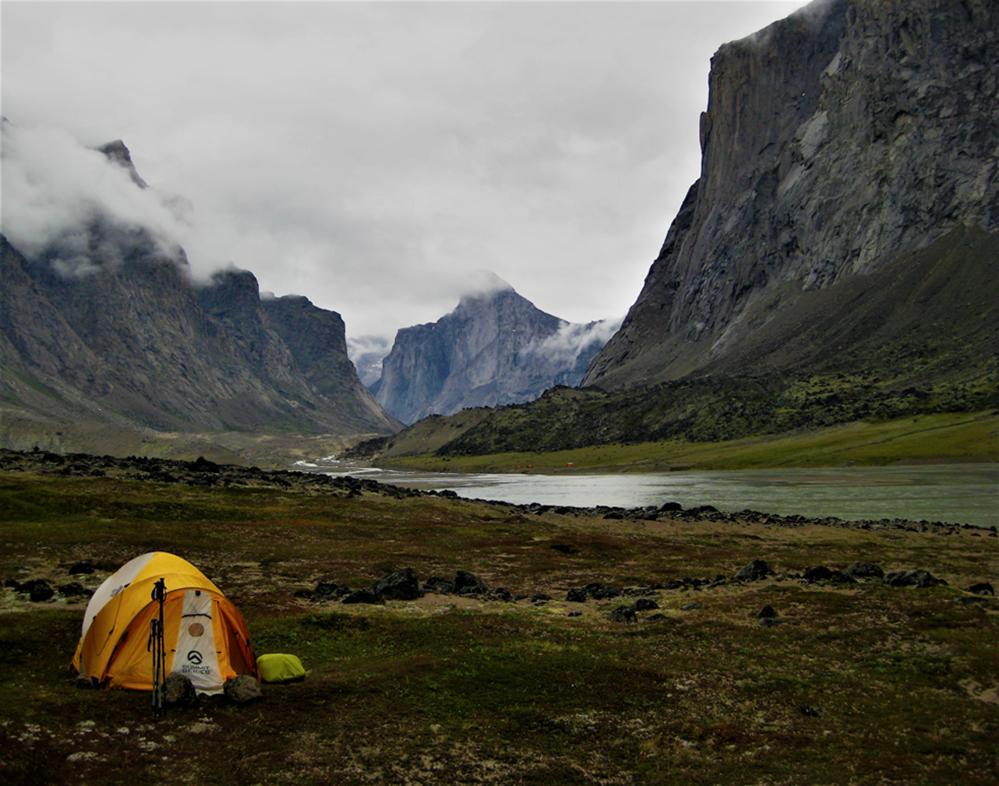
Bayesian examples from my work
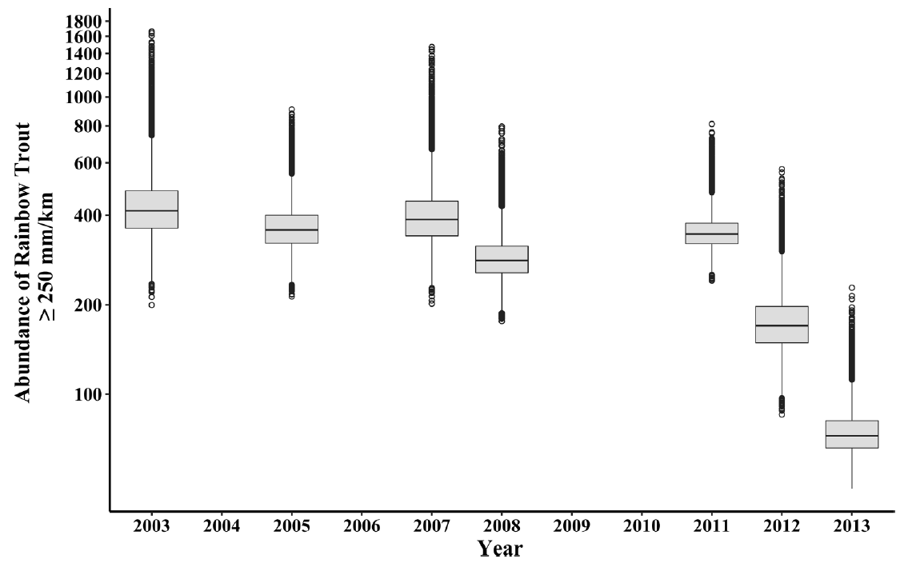
- Decline was not statistically significant (frequentist)
- 88% chance of population decline (Bayesian)
Bayesian examples from my work
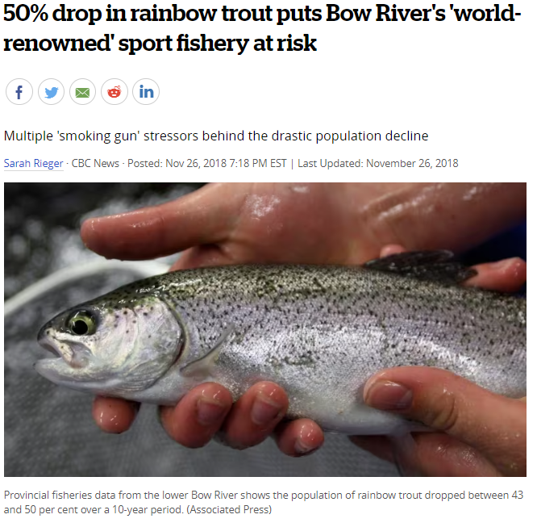
Examples from my work cont’d
- Reconstructing population dynamics across landscapes
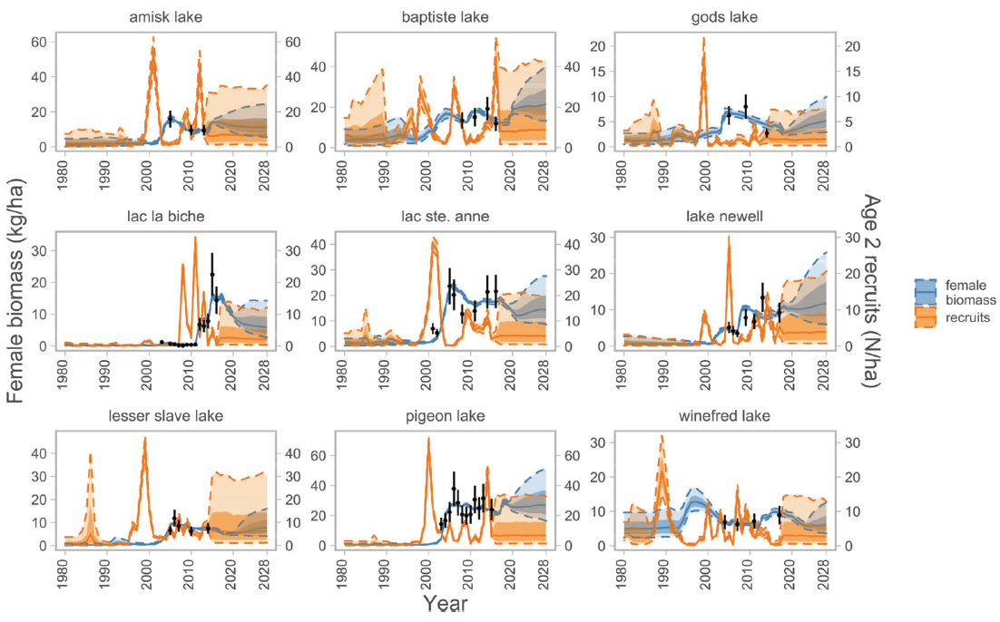
Examples from my work cont’d
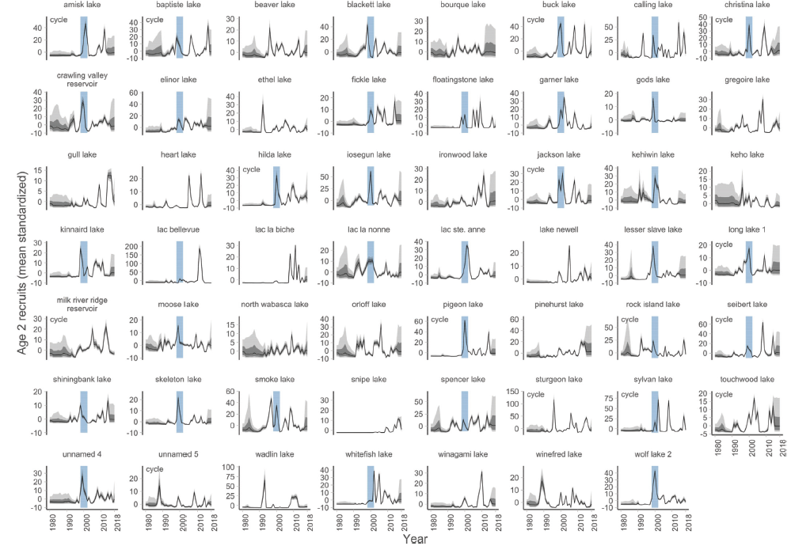
Examples from my work cont’d
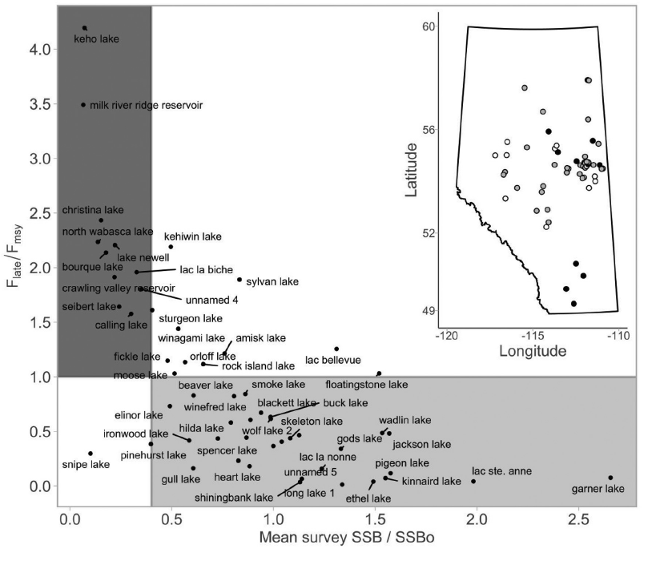
My philosophy on statistical modeling
- The reliability of inferences matters when management of public-trust natural resources might be affected by your analyses
- We will spend a lot of time evaluating models
- Intuition is critical in applied ecological analyses
- We will be trying to improve your intuition with Bayesian modeling
- There are rarely cookbook solutions to hard problems
- All about improving your statistical toolbox
Course themes
- Development of fairly advanced implementation skills using R and Stan
- Why?
- There are easier ways to do some of the analyses we will learn
- By learning to do easy things the hard way, the hard things become easy (Royle and Dorazio 2008)
- Open source and reproducible science
Software, implementation, website
- We are primarily going to use R and Stan
- Recommend Rstudio
- Lectures and code will be available through GitHub
- You do not need to know how to use GitHub, but that is where you can find code and presentations
 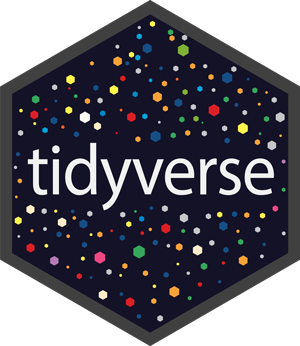
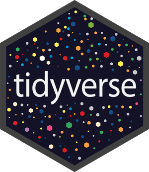 
 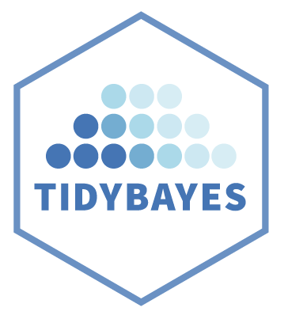
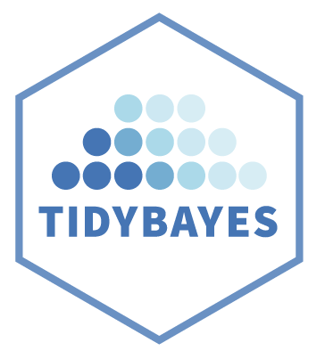
Stan is not:
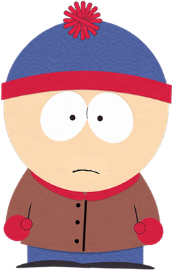
What is Stan, why use it?
Stan is a state-of-the-art platform for statistical modeling and high-performance statistical computation
Named after Stanislav Ulam
Unique class of algorithms (HMC, NUTS), scales well
Cannot do everything (discrete unknowns)
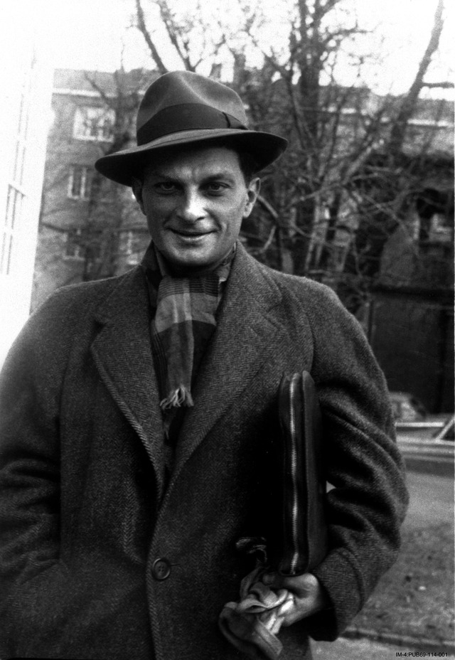


Expectations
- Be kind
- Make an honest effort to learn this stuff
- Share your code
- I share my code with all of you, so please do the same
- Sharing code is critical for reproducible science
- This course lies at the intersection of mathematics, statistics, ecology, and numerical computing
- Failure is okay and to be expected
Some disclaimers
- Bayesian statistics is a vast and difficult topic
- This is not a mathematical statistics course
- I will do my best to track down answers
- I don’t know everything
- Please ask questions
- When in doubt, see disclaimers 3-5
Break
- Return in 10 minutes
Outline: Part II
- Introduction to statistical modeling
- Random variables in words and math
- The Bernoulli and other common distributions
- Conducting a statistical inference
- Bayes’ rule
- Frequentist and Bayesian sneak turtles 🐢
- Pros and Cons of Bayesian inference
- Summary and outlook
A brief introduction to statistical modeling
- This class is about model-based inference
- Focus on the development of arbitrarily abstract statistical models
- These models always contain:
- Deterministic (i.e., systematic) components
- Random (i.e., stochastic) components
- Typically use a model to estimate parameters of interest, conduct an inference, or predict something
- This section draws heavily from Royle and Dorazio (2008), particularly chapter 2
Random variables: words
- Any observation can be viewed as the realization (or outcome) of a stochastic process
- Phrased differently: chance plays a part in what we observe
- Simplest example: binary outcome
- Alive or dead, mature or not mature, detected or sneaky (not-detected)
- Element of chance in all of outcomes and we need a way to deal with that
Random variables: maths
Consider a model of the binary random variable Y:
\[ \text{suppose } p=\operatorname{Pr}(Y=1) \\ \operatorname{Pr}(Y=1)+\operatorname{Pr}(Y=0)=1 \\ \operatorname{Pr}(Y=0)=1-p \]
- Pr = probability
- Can express a statistical model of the observable outcomes
see also Royle and Dorazio (2008)
Bernoulli probability mass function (pmf)
\[ \operatorname{Pr}(Y=y)=p^{y}(1-p)^{1-y} \]
- This thing is called a probability mass function (pmf), and this equation represents pmf of a Bernoulli distributed random variable
- \(y\) is observed datum
- pmf = discrete outcomes
- Note: if this was a continuously distributed random variable we would use probability density function (pdf)
Bernoulli probability mass function (pmf)
- A conventional notation for this stuff is
\[ f(y \mid \theta) \]
- Intended to indicate that the probability of an observed value \(y\) depends on parameter(s) \(\theta\) used to specify the distribution of the random variable \(Y\):
\[ f(y \mid \theta)=p^{y}(1-p)^{1-y} \]
Some common statistical distributions
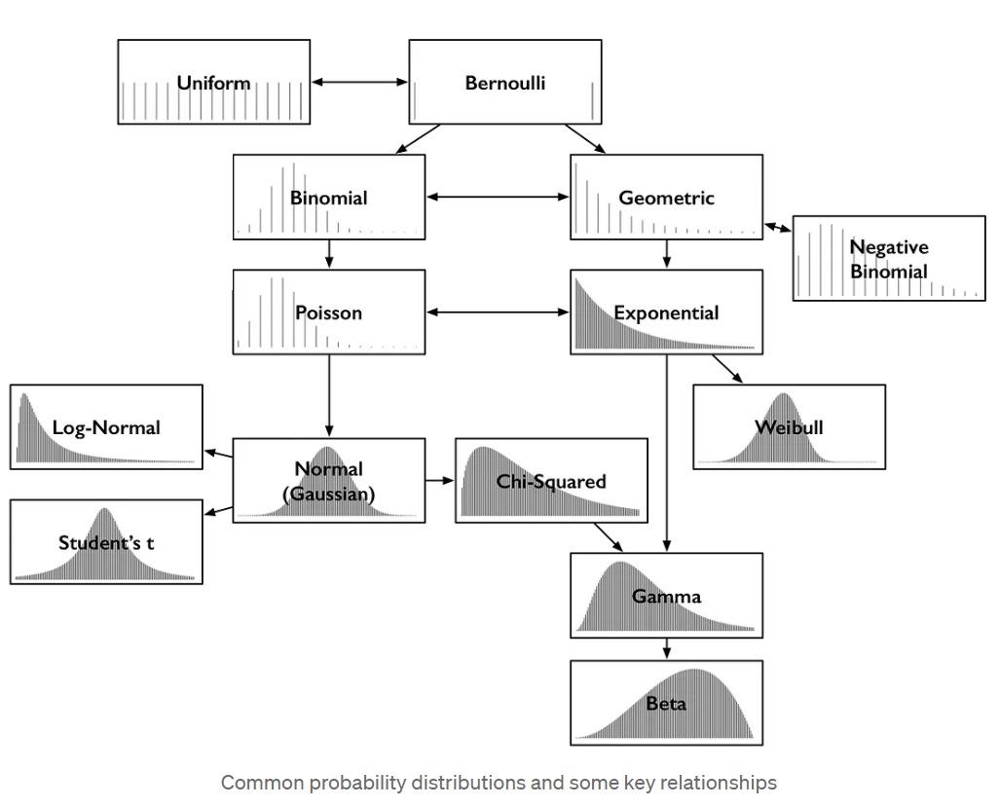
More notation notes for everyone’s sanity
Will try provide its pmf (or pdf) expressed as a function of \(y\) and the parameters of the distribution.
For example, will use \(y\sim \mathrm{N}(\mu, \sigma)\) to indicate a random variable \(Y\) is normally distributed with mean \(\mu\) and standard deviation \(\sigma\)
Regular font for scalars and a bold font for vectors or matrices
More notation notes for everyon’s sanity
- May write it this way, too:
\[ \operatorname{Normal}(y \mid \mu, \sigma)=\frac{1}{\sqrt{2 \pi} \sigma} \exp \left(-\frac{1}{2}\left(\frac{y-\mu}{\sigma}\right)^{2}\right). \]
Conducting a statistical inference
- Given some data, a mathematical model, and the desire to infer something what do we do?
- Frequentist methods:
- Uncertainty is expressed in terms of the variability of hypothetical replicate data sets
- What is the meaning of a 95% confidence interval?
- Bayesian methods:
- Uncertainty expressed through the lens of probability
- What is the meaning of a 95% credible interval?
- Does this through the use of Bayes’ rule
What is Bayes’ rule?
- Thomas Bayes (1702 - 1761) was a mathematician and Presbyterian minister in England
- Developed a simple algebraic rule that has wide-ranging ramifications for statistical inference
- Pierre-Simon Laplace independently rediscovered and extensively developed the methods
\[ p(A \mid B)=\frac{p(B \mid A) p(A)}{p(B)} \]
Bayes’ rule
\[ \color{darkgreen}{p(A\mid B)}=\frac{\color{#2E3F51}{\color{#E78021}{p(B\mid A)}}\color{#3697DC}{p(A)}}{\color{#8D44AD}{p(B)}} \]
- The conditional probability of observing A given that B happened equals the conditional probability of observing B given A, times the marginal probability of A divided by the marginal probability of B
- A and B are observable events
see also Kery and Schaub (2011): chapter 2
Statistical inference using Bayes’ rule
\[ \color{darkgreen}{p(\theta \mid D)}=\frac{\color{#2E3F51}{\color{#E78021}{p(D \mid \theta)}}\color{#3697DC}{p(\theta)}}{\color{#8D44AD}{p(D)}} \]
- \(\theta\) is parameter of interest
- \(D\) is data
- \(\color{#E78021}{p(D \mid \theta)}\) is the likelihood
- \(\color{#3697DC}{p(\theta)}\) is the prior
- \(\color{darkgreen}{p(\theta \mid D)}\) is the posterior
- \(\color{#8D44AD}{p(D)}\) is the marginal probability of the data
- normalization constant
Bayes’ rule can be paraphrased as
\[ \color{darkgreen}{posterior} \propto \color{#E78021}{likelihood} \cdot \color{#3697DC}{prior} \]
- Posterior distribution is always a result of both the information contained in the data and our prior knowledge (assumptions) about model unknowns
- Must formally express our a priori knowledge in the form of a prior probability distribution for each parameter
- Bayes’ rule is a mathematical formalization of how we update beliefs when new information becomes available
see Kery and Schaub (2011): chapter 2
An example to start us off
- Determine the detection probability of invasive Alabama sneak turtles by releasing some into a small pond and counting them on a later occasion
- We release n = 30 and later count y = 2 sneakers
- successes vs. trials
- What’s probability of detecting a turtle, i.e., \(\theta\)?
\[ p(y \mid \theta)=\frac{n !}{y !(n-y) !} \theta^{y}(1-\theta)^{n-y} \]
- There are both frequentist and Bayesian ways to solve this binomial detection probability problem
Analytical maximum likelihood estimate
\[ \begin{array}{l} L(\theta \mid y) \propto \theta^{y}(1-\theta)^{n-y} \\ L(\theta \mid y) \partial \theta=\theta^{y}(1-\theta)^{n-y}\left(\frac{y}{\theta}-\frac{n-y}{1-\theta}\right) \\ \theta^{y}(1-\theta)^{n-y}\left(\frac{y}{\theta}-\frac{n-y}{1-\theta}\right)=0 \\ \hat{\theta}=\frac{y}{n} \end{array} \]
- This is frequentist
- Note the “flip”
Frequentist Alabama sneak turtles 🐢
- Now let’s do it numerically in R to learn:
\[ L(y \mid \theta)\propto \theta^{y}(1-\theta)^{n-y} \]
Analytical vs. numerical MLEs (frequentist)
- pretty darn close
- sneak turtles are devilish 😈
Alabama sneak turtles: log-likelihood
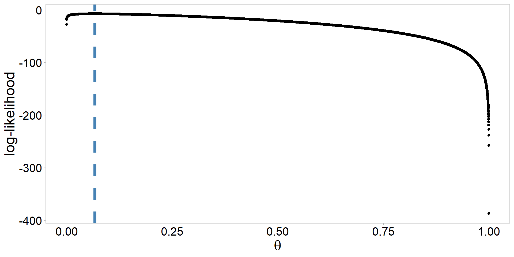Moving from log-likelihood to likelihood
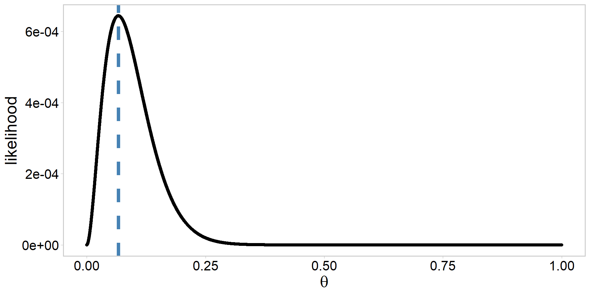How might we do the sneak turtle analysis in a Bayesian framework?
Remember: \[ \color{darkgreen}{posterior} \propto \color{#E78021}{likelihood} \cdot \color{#3697DC}{prior} \]
What do we currently have, what do we know?
Assume the following prior: \[ \color{#3697DC}{\theta\sim \mathrm{beta}(\alpha, \beta)} \]
How to choose values for \(\alpha\) and \(\beta\)?
Visualizing a \(\mathrm{beta}(\alpha, \beta)\) prior
- always a good idea to visualize
Visualizing a \(\mathrm{beta}(\alpha, \beta)\) prior
- always a good idea to visualize
Visualizing a \(\mathrm{beta}(\alpha, \beta)\) prior
- always a good idea to visualize
Visualizing a \(\mathrm{beta}(\alpha, \beta)\) prior
- always a good idea to visualize
Do math to get an analytical posterior
\[ \begin{array}{l} \text{the beta prior: } \color{#3697DC}{p(\theta) \propto \theta^{\alpha-1}(1-\theta)^{\beta-1}} \\ \text{the binomial likelihood: } \color{#E78021}{p(y \mid \theta) \propto \theta^{y}(1-\theta)^{n-y}}\\ \\ \color{darkgreen}{p(\theta \mid y)} \propto \color{#E78021}{p(y \mid \theta)} \cdot \color{#3697DC}{p(\theta)} \\ \color{darkgreen}{p(\theta \mid y)} \propto \color{#E78021}{\theta^{y}(1-\theta)^{n-y}} \cdot \color{#3697DC}{\theta^{\alpha-1}(1-\theta)^{\beta-1}} \\ \color{darkgreen}{p(\theta \mid y)} \propto \theta^{y+\alpha-1}(1-\theta)^{n-y+\beta-1} \end{array} \]
- Last line represents an analytical solution to the posterior
Let’s do that in code
y <- 2 # successes
n <- 30 # trials
eps <- 1e-6 # buffer because theta must lie within [0,1]
a <- b <- 1 # alpha, beta parameters of the beta(shape1, shape2) prior
theta <- seq(eps, 1 - eps, length.out = 1e4) # sequence to thetas to try
# calculate log posterior:
logPost <- (y + a - 1) * log(theta) + (n - y + b - 1) * log(1 - theta)
MAP <- theta[which.max(logPost)] # maximum a posteriori estimate
my_data <- data.frame(logPost, theta) # for plottingPlot the unstandardized log-posterior
Plot the standardized posterior
my_data %>%
ggplot(aes(x = theta, y = exp(logPost) / sum(exp(logPost)))) + # note exp()
geom_point(size = 1.4) +
ylab("Posterior") +
xlab(expression(theta)) +
geom_vline(
xintercept = MAP, linetype = 2, linewidth = 2,
color = "steelblue"
) + # add MAP estimate
theme_qfc() +
theme(text = element_text(size = 20))Frequentist MLEs vs. Bayesian MAP
[1] 0.06666667[1] 0.06670754[1] 0.06670754- Why is this convergence among methods happening?
- When might this not happen?
- While we get the same answer, the results have different interpretations
- What do these findings mean for monitoring sneak turtles?
Alabama sneak turtles: a dead simple example chosen for a reason 🐢
Allows us to easily look at how different priors for \(\theta\) or amounts of data (n) influence the resulting Bayesian answer
- Good exercise if you want to develop some intuition in this simple model
Computing a posterior distribution analytically like we did here is often impossible
Simulation techniques such as Markov Chain Monte Carlo (MCMC) can be used to draw samples from a posterior instead of solving the equations 😁
Pros of Bayesian inference
- Pros
- Probability statements are exact for any sample size
- Way to formally incoporate prior information
- Easy to make probability statements about things you care about
- Sounds cool 😎💁♀️👻👽
Cons of Bayesian inference
- Cons
- Must specify a prior, and priors influence results
- Easy to screw up (hence emphasis on simulation and model checks in this class)
- Computing the posterior is difficult
- In all but the simplest cases, requires the approximation of high dimensional integrals
- Many algorithms are gauranteed to converge in the mathematical limit, but not in your graduate degree timeline (or even lifetime)
Summary and outlook
- A crash course in statistical inference
- Frequentist and Bayesian paradigms
- Talked about some commonly used distributions
- Simple turtle example
- This example had analytical solutions, but used it to better understand what is actually going on ‘under the hood’ aka in the math
- Most Bayesian analyses require the approximation of a posterior distribution via simulation techniques (i.e., algorithms like MCMC)
Before next class
- Make sure you have R, Rstudio, and Stan and cmdstanr installed and working
- Rstudio and R:
- Stan and cmdstanr
References
- Gelman et al. 2015. Stan: A probabilistic programming language for Bayesian inference and optimization
- Images on Stanislav Ulam slide courtesy of the Atomic Heritage Foundation
- Common probability distributions figure
- For a great refreshers of these and other introductory statistical inference topics, see:
- Kery and Schaub. 2012. Bayesian Population Analysis using WinBUGS. Chapters 1-2. (Easier)
- Royle and Dorazio 2008. Hierarchical modeling and inference in ecology. Chapters 1-2. (Advanced)
Exercises (optional)
- Prior sensitivity test
Your supervisor is skeptical about these new-fangled Bayesian statistics, as they believe the prior is ridiculous and subjective. To convince them otherwise, conduct a prior sensitivity test for the Alabama sneak turtle example. Look at how varying the prior for \(\theta\) shifts the resulting posterior distribution (and hence your inferences). What (if anything) can you do or say to relieve their concerns?
- Is the coin biased?
You are people watching at a bar while reading about Bayesian statistics because you are a nerd, and you watch someone flip a coin with the following outcomes: TTHHHTHTHHHTHHH. This human then comes over to you and asks if you want to bet 100 dollars on the next coin flip being H. Can you use Bayes’ theorem to determine the probability that they are tossing an unfair coin? If you conducted a similar anlaysis in a frequentist paradigm, what would you conclude?
- Sneak turtles continued…
Suppose the example we used in class was criticized by your advisor and the resource management agency tasked with managing Alabama sneak turtles because you tried to count them on a cloudy day, and everyone thinks sneak turtles don’t like cloudy days.
Thus, resouce managers undertake another experiment analogous to yours, except this time they release n = 100 and later detect y = 17 turtles.
Using the posterior you calculated from the cloudy day as the prior for a new analysis, can you update your beliefs via Bayes’ rule accordingly and develop a new posterior distribution for sneak turtle detection probability \(\theta\)?